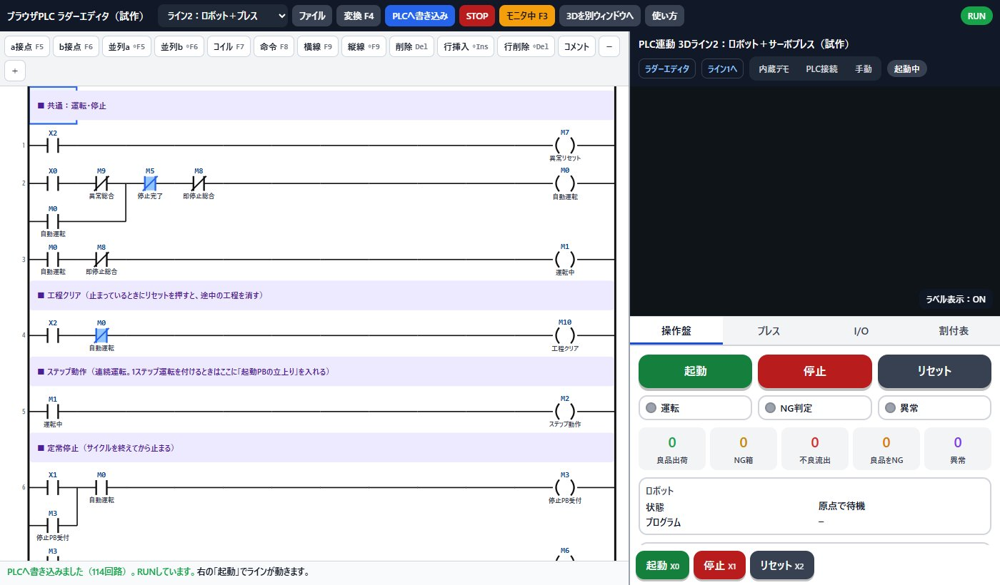
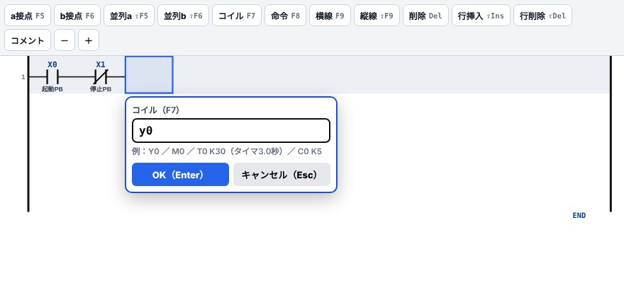
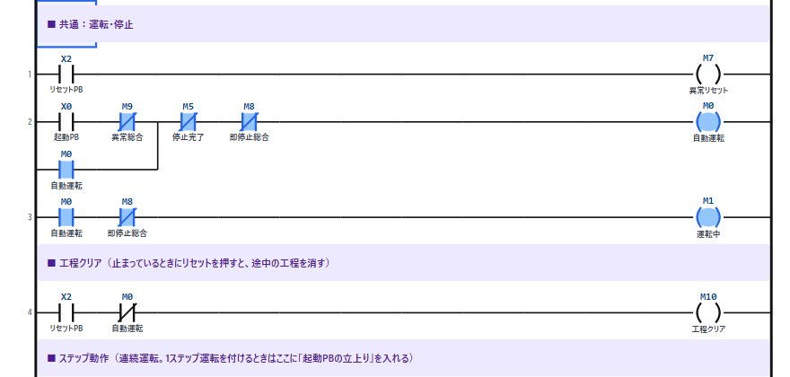
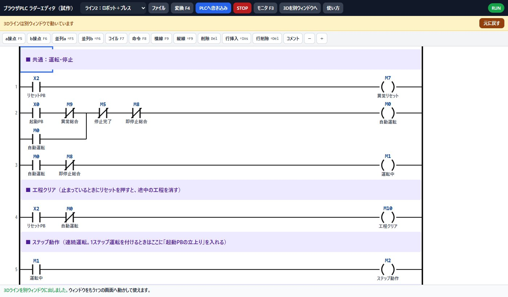
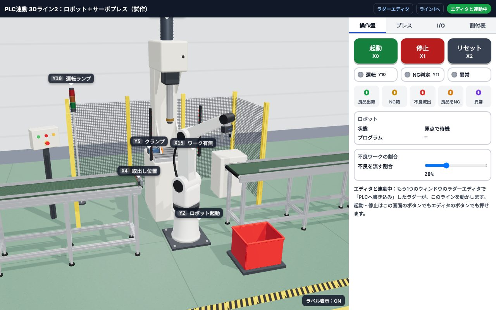
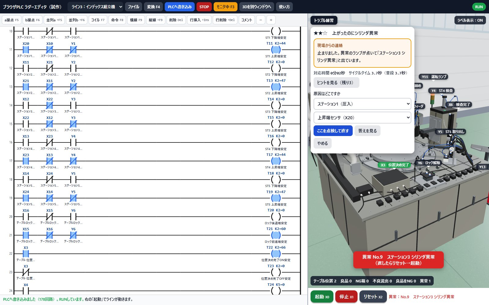

1画面の見かた
左がラダーエディタ、右が3Dラインです。上のボタンは広く使われているラダーソフトと同じ並び・同じキーで使えるようにしています。

PCで開いたときの画面（ライン2を表示中）。スマホでは横にスクロールできます
- ツールバーライン切替・ファイル・変換・書き込み・RUN/STOP・モニタ・別ウィンドウ・使い方。すぐ下で拡大して説明します。
- 部品パレットa接点・b接点・コイル・命令など。キーボードのF5〜F9でも置けます。
- ラダー図ここに回路を描きます。青い枠がカーソルです。
- 3Dラインドラッグで回転、ホイール（スマホは2本指）で拡大。黒いラベルがI/Oの番号です。
- 操作盤起動（X0）・停止（X1）・リセット（X2）の押しボタン。
- メッセージ欄次にやることや、エラーの場所が出ます。
ツールバー（拡大）

スマホでは横にスクロールできます
- ライン切替ライン1（押出し）・ライン2（ロボット＋プレス）・ライン3（インデックス組立機）を選びます。
- ファイルサンプルを開く・新規・書き出し・読み込み。
- 変換（F4）描いたラダーにミスがないか確かめます。（変換＝絵のラダーを、PLCが実行できる形に直す作業）
- PLCへ書き込みラダーを内蔵PLCに送ります。ここで初めてラインに反映されます。
- STOP / RUN内蔵PLCを止めたり動かしたりします。
- モニタ（F3）ONの接点・コイルが青く光り、タイマの現在値も見えます。
- 3Dを別ウィンドウへ3Dラインを別ウィンドウに出します。2画面で使うとき用（6章）。
- 使い方このページを開きます。
- PLCの状態緑の「RUN」なら実行中。
画面が狭いので、上に「ラダー」「3Dライン」の切替タブが出ます。片方ずつ表示されます。
2まず動かしてみる（3ステップ）
ラダーを書き換えても、「PLCへ書き込み」を押すまでラインは前のラダーのまま動きます。本物のPLCと同じ考え方です。
3ラダーの書き方
置きたい場所をクリックして、キーを押すか、パレットのボタンを押します。入力欄にデバイス番号を打ってEnterで確定です。

X0・X1の右に「コイル」を置こうとしているところ
- 部品パレットボタンの右に書いてあるキーと同じ働きです。
- 入力欄ここに
Y0のように打ちます。小文字でもOK。下に入力例が出ます。
キー操作（広く使われているラダーソフトと同じ）
| キー | 置くもの | 入力の例 |
|---|---|---|
| F5 | a接点（ONで通る接点） | X0 |
| F6 | b接点（OFFで通る接点） | X1 |
| ⇧F5 | 並列a接点（上の行と並べる） | M0（自己保持など） |
| ⇧F6 | 並列b接点 | M0 |
| F7 | コイル・タイマ・カウンタ | Y0／T0 K30（3.0秒）／C0 K5 |
| F8 | 命令 | MOV K800 D200／RST C1／ZRST M11 M31 |
| F9 | 横線 | — |
| ⇧F9 | 縦線（カーソルの右下に引く） | — |
| Del | カーソル位置を消す | — |
| ⇧Ins／⇧Del | 行の挿入／行の削除 | — |
| F4 | 変換 | — |
| F3 | モニタ開始・終了 | — |
命令を直接打つ（リスト入力）
ラダーの上でそのまま文字を打ち始めると、入力欄が開きます。ラダーソフトの「命令で打つ」やり方がそのまま使えます。
| 打つ文字 | 結果 |
|---|---|
LD X0 | 行の頭にa接点 X0 |
ANI X1 | 直列にb接点 X1 |
OR M0 | 並列にa接点 M0 |
OUT Y0 | コイル Y0 |
LDP X0／LDF X0 | 立上り／立下りパルス接点 |
AND>= D101 K2680 | 比較接点（D101が2680以上で通る） |
使えるデバイスと命令
X・Y（8進数：X7の次はX10）、M、L、B、T（タイマ 100ms単位）、C（カウンタ）、D（数値）、K（定数）、SM400（常時ON）、SM401（常時OFF）、SM402（RUN後1回だけON）
OUT、SET、RST、PLS、PLF、MOV(P)、ZRST、INC(P)、DEC(P)、＋、－、比較（＝ <> > < >= <=）
4モニタで動きを見る
モニタ（F3）を押すと、ONになっている接点やコイルが青く塗られます。タイマは T41 K30=19 のように現在値が出ます（19＝1.9秒経過）。

起動後のモニタ。自動運転 M0 が自己保持され、運転中 M1 も入っている
「ラインが止まった」ときは、どの接点が青くならずに電気が止まっているかを探します。現場のトラブルシュートと同じ見方です。
5エラーが出たとき
「変換」や「PLCへ書き込み」でミスが見つかると、メッセージ欄に赤字で行番号と理由が出て、カーソルがその行へ飛びます。

2行目にコイルを置き忘れた例（途中を省略しています）
- エラーメッセージ「行2：出力（コイル・命令）がない回路です」
| メッセージ | 直し方 |
|---|---|
| 出力がない回路 | 行の右端にコイルか命令を置く |
| つながっていない | 途中に空きマスがある。横線（F9）でつなぐ |
| 左の母線に届かない | 並列の枝が左端まで来ていない。縦線（⇧F9）を確認 |
| 書込み先はDに | MOV・INC・＋などの最後はDを指定する |
62画面で使う（エディタと3Dを別ウィンドウに）
モニタが2枚ある人は、片方の画面にラダー、もう片方に3Dラインを大きく出せます。
自動で
連動
エディタ側の画面

- 3Dを別ウィンドウへ押すと3Dが別ウィンドウになり、エディタは横いっぱいに広がります。
- 黄色い帯「3Dラインは別ウィンドウで動いています」の表示。
- 元に戻す別ウィンドウを閉じて、1画面の表示に戻します。
3Dライン側の画面

別ウィンドウでは右側のパネルが付き、情報が多く出ます（右側を拡大↓）

- 「エディタと連動中」緑ならエディタとつながっています。
- 操作盤起動・停止・リセットはこちらでもエディタ側でも押せます。
- カウンタ良品出荷・NG箱・不良流出などの数。ラダーの出来を数字で確かめられます。
右側のタブで「プレス」（荷重カーブ）「I/O」（ON/OFF一覧）「割付表」も見られます。1画面のときより情報が多く出ます。
ブラウザが「ポップアップをブロックしました」と止めている場合があります。アドレスバー右のアイコンからこのサイトのポップアップを許可して、もう一度押してください。それでも開かないときは、画面に出るURLを同じブラウザの別タブで開くと連動します。
エディタと3Dは同じブラウザ（例：どちらもChrome）で開いてください。ChromeとEdgeのように別のブラウザだと連動しません。
7ライン2の見どころ（ロボット＋サーボプレス）
ライン2は、供給 → ロボットでプレス台へ → クランプ → 加圧 → 判定 → ロボットで排出かNG箱へ、の流れです。サンプルラダーは114回路で、ライン3と同じステップラダーの組み方です。供給・ロボット投入・クランプと加圧・ロボット排出の4つのサイクルに分け、工程は「指令」と「確認」の組で1段ずつ進みます（SET/RST は使いません）。止まるときは異常番号（D20）が出ます。

「プレス」タブ。青線が今回の荷重カーブ
判定のしくみ
プレスは目標荷重（D200）に達したところで止まり、そのときの位置（D101）をPLCに返します。
サンプルラダーは、位置が268.0〜270.0mm（D101が2680〜2700）なら良品と判定しています。
カーブの先端が緑の枠に入れば良品。手前で荷重が立ち上がるのは部品がきつい、奥まで下がってから立ち上がるのは部品が入っていないワークです。
I/O割付（ライン2）
| デバイス | 内容 |
|---|---|
| X0 / X1 / X2 | 起動PB / 停止PB / リセットPB |
| X3 / X4 | 供給 入口センサー / 取出し位置センサー |
| X5 / X6 / X7 | ロボット 動作中 / 動作完了 / 原点 |
| X10 / X11 | クランプ 前進端 / 後退端 |
| X12 / X13 / X14 | プレス 上限 / 加圧完了 / 下限 |
| X15 | プレス台 ワーク有無 |
| D100 / D101 | プレス 現在荷重[N] / 位置[0.1mm] |
| Y0 / Y1 | 供給コンベア / ワーク供給指令 |
| Y2 / Y3・Y4 | ロボット起動 / プログラム番号（1＝供給→台、2＝台→排出、3＝台→NG箱） |
| Y5 / Y6 / Y7 | クランプSOL / プレス加圧指令 / 排出コンベア |
| Y10 / Y11 / Y12 | 運転ランプ / NG判定ランプ / 異常ランプ |
| D200 / D20 | プレス 目標荷重[N] / 異常番号 |
ライン1（押出し）の割付を見る
| デバイス | 内容 |
|---|---|
| X0 / X1 | 入口センサー / 押出位置センサー |
| X2 / X3 | シリンダ 後退端 / 前進端 |
| X4 / X5 / X6 | 起動PB / 停止PB / リセットPB |
| Y0 / Y1 | コンベア運転 / シリンダ前進SOL |
| Y2 / Y3 / Y4 | ワーク供給指令 / 運転ランプ / 異常ランプ |
| D20 | 異常番号 |
7bライン3の見どころ（インデックステーブル式 自動組立機）
ライン3は、8か所の治具が載った回転テーブルのまわりに5つのステーションが並ぶ自動組立機です。圧入 → 部品置き → ねじ締め → 検査 → 取り出しを5か所で同時に行い、全部が終わるとテーブルが45度回って次の拍へ進みます。サンプルラダーは178回路で、現場のステップラダーの組み方どおりに見出しで区切ってあります。
- サイクルごとに番号の帯：ステーション1〜5と割出しを、サイクル1〜6に分けています。サイクル1は M100〜、サイクル2は M120〜 … 割出しは M200〜 で、帯の中は「+0 相互インターロック → +1 定位置 → +2 準備完了 → +3 サイクルスタート → 工程 → +19 完了」の順に並びます。
- 工程は「指令」と「確認」の組：指令は「ステップ動作
M2か自己保持」かつ前の工程、確認は「動きの端の安定タイマか自己保持」かつ指令で、1段ずつ進みます。SET/RST は使っていません（RST はカウンタを0に戻すときだけ）。 - 順番を守る：ロックが入っているときだけステーションを下げ、全部が上がってロックが抜けてから割出しします。出力のすぐ上に、動いてよい条件を並べたインターロックのメモリを置いています。
- 止まるときは必ず異常が出る：サイクルが決めた時間で終わらない（1秒クロック
SM412をカウンタで数える）、シリンダが出力に合った端に着かない・両端のセンサが同時にON、部品切れ、サイクルが始まらない、の14種類です。異常番号はD20、異常ランプはY14。直したらリセット → 起動で、止まった工程の続きから動きます。 - テーブルの位置は D0（0〜7）で届きます。割出し指令
Y0で45度回り、回っている間は位置決め完了X3がOFFになります。 - 検査値は D10（0.01mm単位）。480〜520 で検査OK、それ以外は検査NGです。OKとNGは片方しか入らないので、検査が終わって値が0に戻っても判定は変わりません。
- 取り出しの行き先は Y13（良品シュート切替）。判定はデータレジスタ（
D30＝検査の位置、D31＝取り出しの位置。1＝良品、2＝NG）で持ち、割出しのたびに送ります。良品の印があるときだけ ON にして良品の箱へ入れます。OFF なら NG箱なので、電磁弁や配線が壊れても不良は良品の箱へ流れません。
I/O割付（ライン3）
| デバイス | 内容 |
|---|---|
| X0 / X1 / X2 | 起動PB / 停止PB / リセットPB |
| X3 / X4 | テーブル 位置決め完了 / ボウルフィーダ 部品あり |
| X5 / X6 | 排出位置 製品あり / 検査 完了 |
| X10〜X14 | ステーション1〜5 下降端 |
| X15 / X16 | テーブルロック 前進端 / 後退端 |
| X20〜X24 | ステーション1〜5 上昇端 |
| D0 / D10 | テーブル位置（0〜7） / 検査値[0.01mm] |
| Y0 | テーブル割出し（ONで45度回る） |
| Y1〜Y5 | ステーション1〜5 下降SOL（圧入 / 置き / ねじ締め / 検査 / 取り出し） |
| Y6 / Y7 / Y10 | テーブルロック 解除SOL（ONでピンが抜ける） / ボウルフィーダ運転 / ホッパーゲート |
| Y11 / Y12 / Y13 | 運転ランプ / NG判定ランプ / 良品シュート切替（ONのときだけ良品の箱へ） |
| Y14 / D20 | 異常ランプ / 異常番号（0＝異常なし） |
7cトラブル対応の練習（ライン3）
ライン3には、故障を1つ仕込んで原因を探す練習が8問あります。現場からの連絡を受けて、止まっている場所を見つけ、原因の部品を選んで直し、ラインがもう一度動くまでが1問です。故障は3D側に入るので、どのラダーで動かしていても同じように起きます。

- トラブル練習3Dの左上のボタンで問題の一覧を開きます。ライン3の画面だけで開いたときは、右の「トラブル」タブです。
- 現場からの連絡ラインを少し動かしたあとに故障が入り、症状が届きます。止まったときは異常の番号と名前も出ます。ここから対応時間を数えます。
- 止まっている回路モニタ（F3）で、工程が待っている接点をたどります。この例は「ステーション3 シリンダ異常」。上昇確認が待つ T15（上昇端の安定）の回路で、X22 だけが青くなっていません。
- 原因を選んで直す場所と部品を選んで「ここを点検して直す」。ハズレの点検は +60秒です。ヒントは3段階あります。
- リセット → 起動直したら、リセットで異常を消して起動を押します。工程は残っているので、止まったところの続きから動きます。
探す順番は、どの工程で止まったか → その工程が待っている条件 → 揃っていない接点 → 3Dでその部品が本当に動いたか、です。シリンダが動いているのにセンサが入らなければセンサ、出力が出ているのに動かなければ電磁弁やメカ、というように「信号」と「動き」を見比べると、交換する部品を当てずっぽうで選ばずに済みます。
8練習問題：わざと変えてみる
サンプル（ライン2）を少し書き換えて「PLCへ書き込み」→「起動」。何が起きるか予想してから動かすと力がつきます。
① 自己保持を消す
自動運転M0 の回路（2つ目の回路）から、並列の M0 を消して書き込み。→ 起動ボタンを離すと止まるはずです。② 供給の間隔を変える
供給の間隔タイマT41 K30 を T41 K10 に。→ ワークが1秒ごとに供給されます。③ 目標荷重を下げる
設定値の回路のMOV K800 D200 を K300 に。→ 荷重が手前（約262mm）で届いてしまい、良品までNG箱へ行きます。「プレス」タブで赤い点線が下がるのを確かめてください。④ 判定の窓を広げる
良品判定M154 の回路の比較接点 D101 >= K2680 を K2600 に。→ 部品がきついワークまで良品に流れて「不良流出」が増えます。判定条件の大切さがわかります。⑤ ライン3：OKとNGの止め合いを外す
ライン3のサンプルで、検査NGM175 の回路から M174（検査OK）のb接点を消す。→ 検査が終わって値が0に戻った瞬間にNGも入り、良品まで全部NG箱へ行きます（「良品をNG」が増えます）。OKとNGを互いに止め合う大切さが分かります。⑥ 自分で書く（ライン1）
ライン1を選んで「ファイル」→「新規」。起動・停止の自己保持とコンベア運転だけを自分で書いて、ワークが流れるところまで作ってみてください。「ファイル」→「サンプルを開く」でいつでも最初のラダーに戻せます。
9保存と共有
書いたラダーはこのブラウザに自動で保存されます。閉じても次に開けば残っています。
ブラウザの履歴やサイトデータを消すと、自動保存も消えます。大事なラダーは「書き出し」で控えておいてください。
10よくある質問
Q. 起動を押しても動きません
「PLCへ書き込み」を押したか、右上がRUNになっているかを確認してください。モニタ（F3）をONにすると、どこで止まっているか見えます。
Q. ほかのラダーソフトで作ったラダーは読み込めますか？
直接は読み込めません。このエディタは、広く使われているラダーソフトと同じ操作で書ける練習用です。考え方・命令・キー操作はそのまま本物に持っていけます。
Q. 3Dが重い・カクカクします
自動で画質を下げて調整します。それでも重いときは、右下の「ラベル表示」をOFFにするか、他のタブを閉じてください。
Q. スマホでも使えますか？
使えます。「ラダー」「3Dライン」のタブで切り替えます。ラダーを書くならPC（キーボード）がおすすめです。
Q. ラベルが邪魔です
3D画面右下の「ラベル表示：ON」を押すとOFFになります。